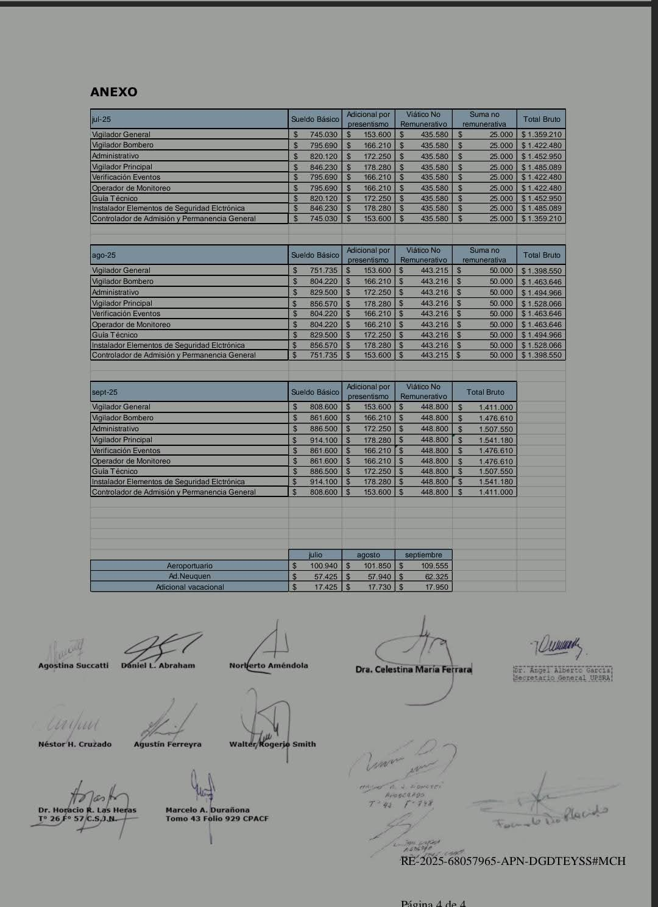
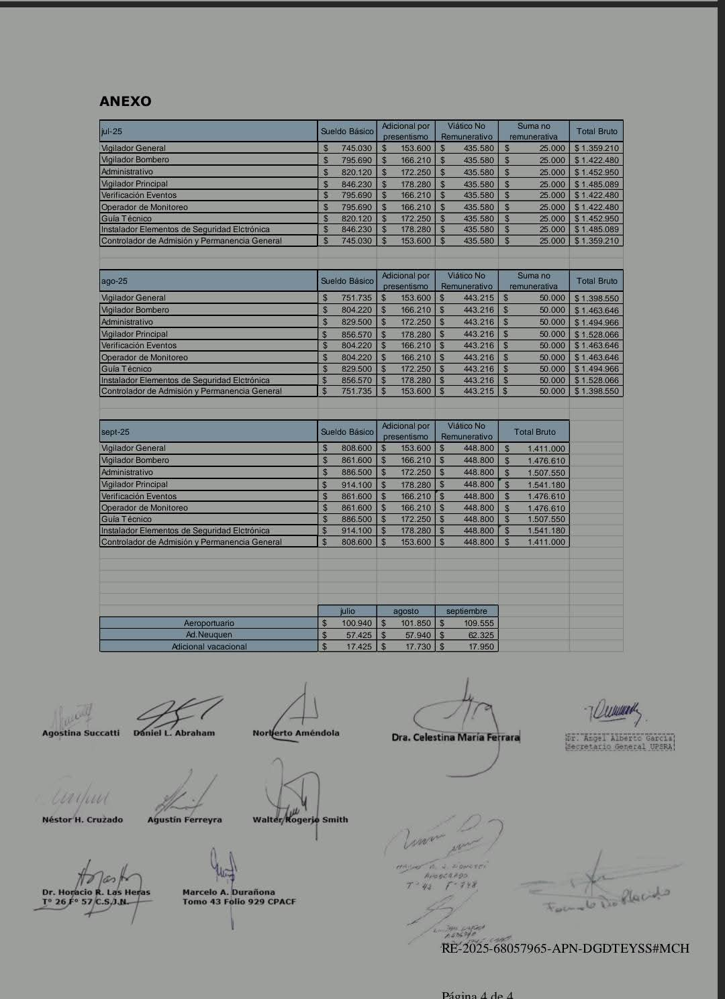

UPSRA y CAESI Firman Nuevo Acuerdo Salarial 2025
Acuerdo Oficial Firmado. El 24 de junio de 2025, la Unión Personal de Seguridad de la República Argentina (UPSRA) y la Cámara Argentina de Empresas de Seguridad e Investigación (CAESI) firmaron oficialmente el nuevo acuerdo salarial que marcará un antes y un después para los trabajadores de la seguridad privada en Argentina. Este convenio será parte del Anexo "V" del C.C.T. 507/07 y entrará en vigencia inmediatamente tras su homologación.
El acuerdo establece incrementos salariales significativos y escalonados que van desde octubre hasta diciembre de 2025, brindando el alivio económico que tanto esperaban miles de vigiladores y sus familias. Además, incluye importantes mejoras en adicionales y beneficios laborales.
Nuevas Escalas Salariales para Vigilador General:
• Octubre 2025: $817.500 (sueldo básico) + adicionales = $1.450.900 total
• Noviembre 2025: $825.600 (sueldo básico) + adicionales = $1.459.000 total
• Diciembre 2025: $833.600 (sueldo básico) + adicionales = $1.492.000 total
Beneficios Adicionales Destacados:
• Adicional por Presentismo: $159.600 mensuales para todas las categorías
• Suma No Remunerativa: Pago extraordinario en diciembre ($25.000)
• Adicional Vacacional: $18.952 por día de vacaciones desde octubre
• Adicional Aeroportuario: De $110.760 en octubre a $112.940 en diciembre
• Viático No Remunerativo: $473.800 fijo para todos los meses
Documentos Oficiales del Acuerdo
A continuación, puedes consultar los documentos oficiales firmados del acuerdo salarial UPSRA-CAESI 2025. Haz clic en cualquier imagen para ampliarla:
Página 1 - Acta de Acuerdo Principal

 
